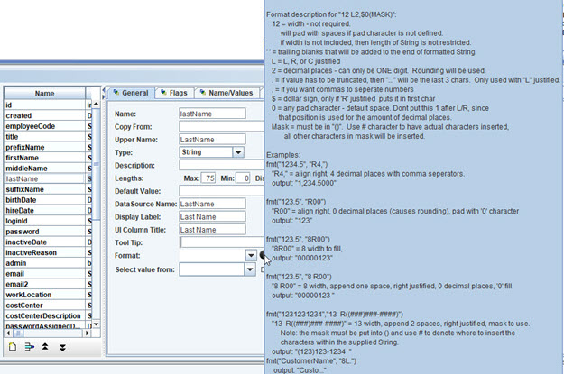
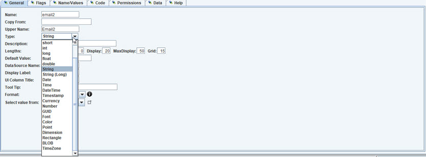
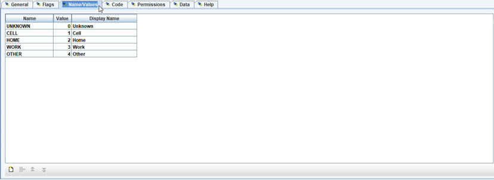
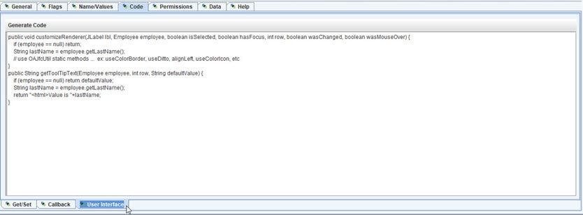
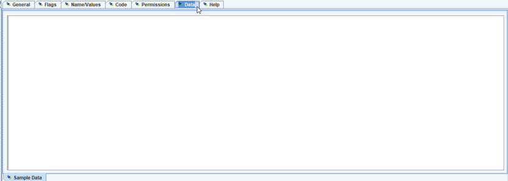

Properties Editor
Object Property Editor tabs.
General tab.
- Name
- Copy from - select another property to duplicate this property from.
- Upper Name
- Type - data type.
- Description
- Lengths
- Default value
- DataSource name
- Display Label
- UI Column Title
- Tool Tip
- Format - mouse over for popup display.
- Select value from - another object property value.

Property format popup help.

Property type list.
- String (Long) is used for unlimited text.
- BLOB is used for binary (byte array) data.
Property with type Date or DateTime, for timezone use.
- Ignore timezone - if datetime does not depend on timezome.
- TimeZone - property to use for determining timezome.
- default is to have it adjusted to computer.
Flags tab. Various flags used by properties.
- Key - unique identifier.
- Auto - generated by datasource.
- Seq - used by sorting to know the order to use.
- Unique - value is unique.
- Sensitive Data - flag to know that this data should be secure and protected.
- Indexed - if datasource, cache should use an index.
- Full-text - allow for full text indexing.
- Required
- Submit - if this property is used to know when an Object is completed/submitted.
- Import Match - if this property can be used to match importing data.
- Case sensitive - flag to know if String matching should be case sensitive.
- Hide - if this property is not used in UI.
- Html Template - if this property is used to enter an HTML template.
- Html Output - if this property is html.
- Report - if property is report output.
- Error - if property represents an error message.
- Inactive - if property represents that Object is inactive.
- Upper/Lower/Titled case - type of case conversion.
- Java Identifier - if value should be a valid Java indentifier.
- Encrypted - data should store as encrypted. This allows for encrypt/decrypt.
- SHA converted - one way encrypted.
- Highlight - show as yellow in the desktop visual component.
- Deprecated - if property will be removed in the future.
- Dont Track Primitive Null - if not checked then null value for primitive types is tracked.
Otherwise, each primitive will be Java default value for the primitive.

Name Values tab. List of possile values to select for property.
- Name - name used for enumeration.
- Value - 0 based, auto assigned.
- Display Name - used in select list.

Code tab. Get/Set methods.
- creates getter and setter
- Generate Code command to generate code to be customized.

Callback tab. Various property callbacks that can be customized.
See callbacks for more information.

User Interface tab. Allow custom code for table column rendering and tooltip.
Permissions tab.
- Confirmation - display message when comfiming with User.
- Visible Property - property path for deciding if property is visible.
- Enabled Property - property path for deciding if property is editable/enabled.
- Context Visible Property - property path for deciding if property is visible for User/Context.
- Context Enabled Property - property path for deciding if property is editable/enabled for User/Context.
Permissions tab / Dependent Properties. List of other property paths that can
affect premissions.

Data tab. used to define sample data for property.
Help tab.